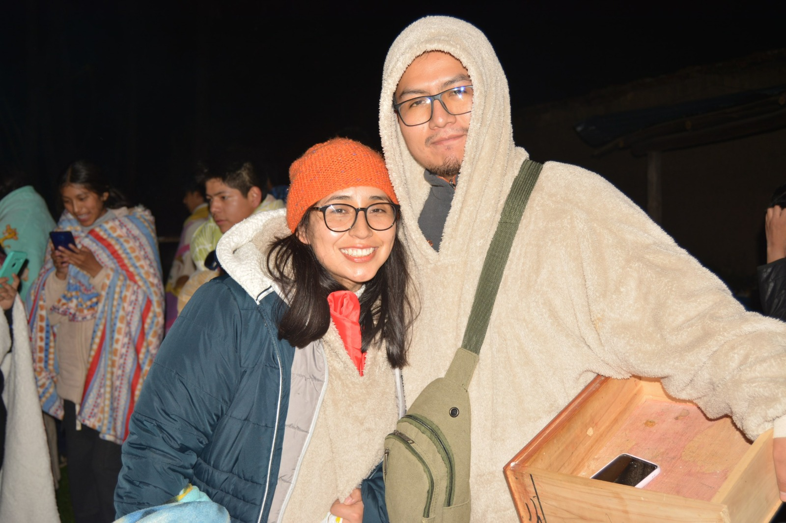
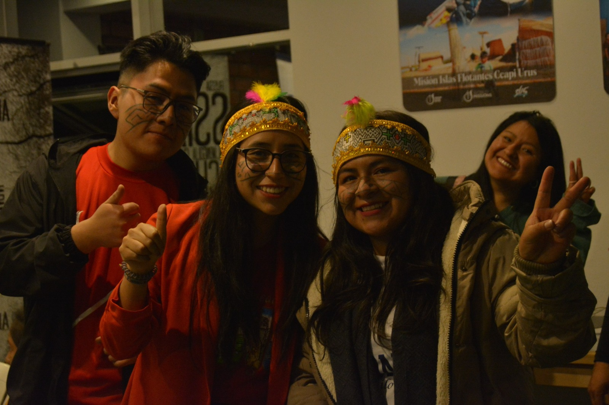
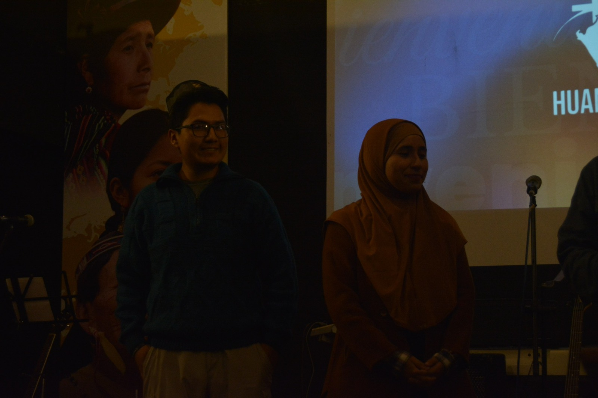
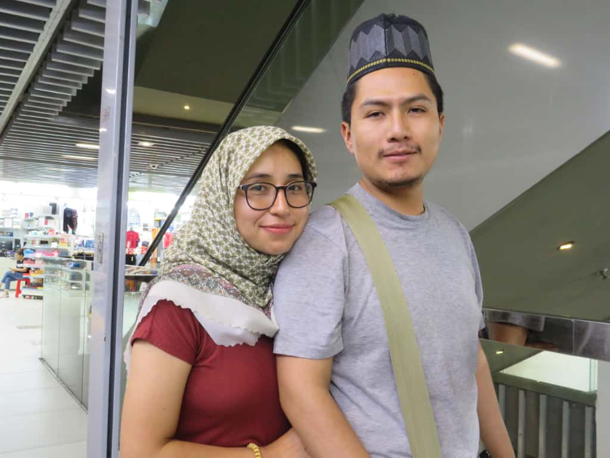
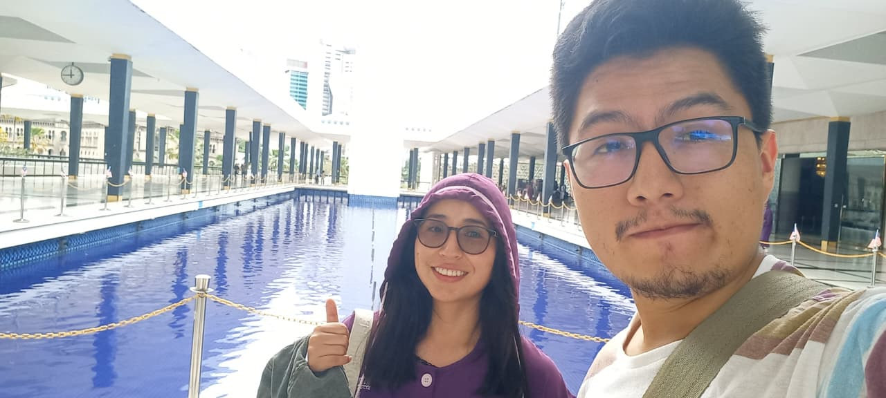
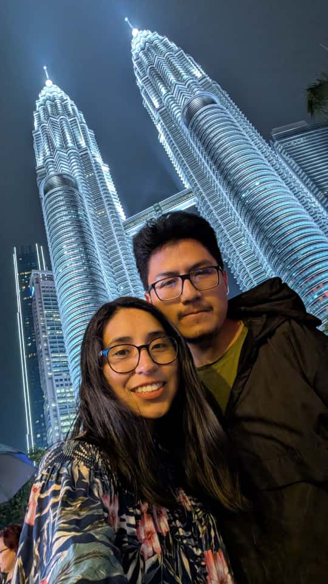

«Porque la tierra estará llena del conocimiento de la gloria del Señor, como las aguas cubren el mar »
Habacuc 2:14



Nuestra aventura no comenzó con un mapa, sino con una oración. Como matrimonio, entendimos que nuestra casa no son cuatro paredes, sino el lugar donde Dios nos llame a servir.
Malasia llegó a nuestros corazones como un desafío de amor: un país lleno de colores, diversidad y una necesidad profunda de conocer la Luz que nosotros hemos recibido.



Ubicada en el corazón de SE Asia, Malasia es un puente entre naciones. Nuestra meta es establecer relaciones auténticas, aprender la cultura local y reflejar el carácter de servicio que nos fue enseñado.
No buscamos solo "estar", buscamos "pertenecer" y amar a cada persona que Dios ponga en nuestro camino.